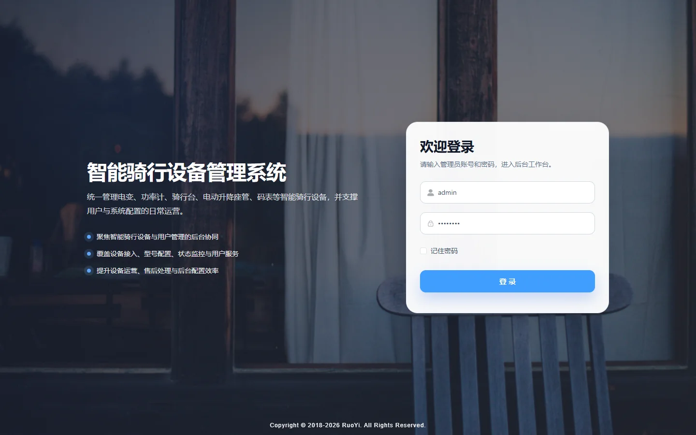

01 项目概览
设备能力要顺着一次骑行自然出现
蓝图骑行既要呈现运动数据，也要让用户在开始前确认车辆、设备与路线，在过程中看懂关键状态，并在结束后回顾结果。我的工作重点是维持这条体验的连续性，让绑定、参数、路线与记录在合适的阶段出现。
02 项目背景
智能硬件提供数据，产品需要解释行动
智能车辆和骑行设备能够产生状态与过程数据，但用户真正关心的是能否顺利开始、当前骑行是否正常，以及结束后能得到什么有用反馈。设备绑定、参数设置、OTA、路线和记录如果分散在不同模块，会增加一次骑行的准备与理解成本。
03 核心问题
不同阶段需要不同的信息优先级
- 设备绑定后，用户仍需要判断连接、电量与可用状态
- 路线、车辆状态和开始骑行入口容易彼此割裂
- 骑行中的速度、路线与设备状态需要适合快速扫视
- 参数设置与固件升级不应打断正在进行的骑行
- 骑行结束后，路线和过程数据需要进入同一份记录
04 用户与场景
从日常开始，到异常服务，任务优先级不断变化
确认车辆与设备状态，开始骑行，查看关键数据并回顾本次结果。
完成设备绑定、理解可调参数，并在必要时处理固件升级。
依据车辆状态、版本与骑行记录定位问题并提供支持。
05 我的职责
围绕用户任务建立产品结构
- 梳理骑行前、中、后的用户任务
- 规划产品结构与核心导航
- 设计设备绑定与准备状态流程
- 组织车辆状态、参数和过程数据层级
- 设计骑行结果、历史记录与 OTA 入口
- 完成移动端交互方案与体验验证
06 产品方案
用一次骑行连接三个阶段
集中确认设备、车辆、路线和开始条件，异常时先处理再出发。
优先展示当前任务需要的状态与过程数据，降低扫视成本。
承接本次结果、路线与记录，并为设备服务保留上下文。
07 核心流程
从设备关系建立，到骑行结束后的继续使用
- 用户添加车辆或绑定骑行设备
- 系统确认蓝牙连接、设备身份与电量
- 骑行前查看车辆状态与路线
- 将已保存路线下发到在线码表
- 开始骑行并查看速度、路线与关键状态
- 断连或偏航时给出明确反馈
- 结束后保存路线与本次骑行记录
- 在非骑行状态处理参数、固件与设备服务
08 关键页面
页面内容跟着用户所处阶段变化
解决问题：出发前快速确认车辆、设备与路线。
设计重点：把准备状态和开始入口放在首屏，异常信息直接指向处理动作。
解决问题：管理码表、电子变速器等设备的连接、电量与设置。
设计重点：区分日常查看、受控参数和需要中断使用的操作。
解决问题：骑行中以较低认知成本读取路线与关键数据。
设计重点：提高速度、方向和异常反馈的可扫视性，压低次要操作。
解决问题：保存、管理并复用骑行路线。
设计重点：让路线规划、码表下发和骑行结果保持上下文连续。

09 产品决策
三次取舍都围绕骑行连续性
我的判断：用户不应该自行拼接设备、路线和数据模块。
最终方案：让设备与路线成为开始条件，过程与结果成为连续反馈。
我的判断：连接、电量或版本问题越晚出现，越容易打断骑行。
最终方案：在出发前集中呈现准备状态，并在原位置提供恢复入口。
我的判断：这类操作有价值，但不属于骑行中的高频任务。
最终方案：将其放在设备管理路径，并对骑行中不可执行的操作给出明确限制。
10 项目难点
既要表达硬件状态，也不能打断骑行主任务
车辆连接、设备电量、版本和骑行状态会持续变化，界面需要说明数据是否为当前状态，以及异常是否影响开始。
参数调整、OTA 和高风险操作不能与骑行主操作混在一起，需要明确使用时机、确认机制和不可操作状态。
11 最终落地
形成覆盖骑行准备、过程与回顾的可体验 Demo
移动端已经呈现车辆与设备绑定、蓝牙连接、设备电量与固件、路线规划和下发、实时骑行以及路线记录等核心体验；管理端补充设备台账与运营视角。当前成果用于验证产品结构、硬件交互和信息优先级，不把尚未接入的真实硬件能力描述成已上线结果。
12 项目复盘
用户体验的关键是每个阶段只出现必要信息
这个项目让我更明确，智能骑行产品不能把硬件能力平均铺在所有页面上。出发前要暴露阻塞条件，骑行中要减少阅读和操作负担，结束后才适合展开记录与设置。若重新推进，我会把原型带到真实骑行阶段中验证扫视时间，并更早覆盖断连、偏航和固件中断等恢复路径。